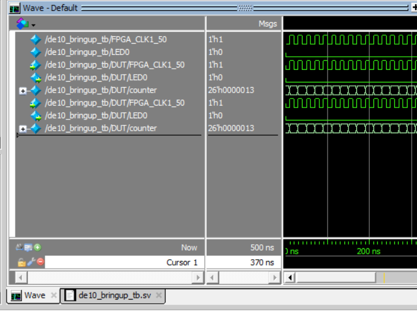

Senior design · ECE 49022 · Team 18 · Fall 2026 In progress
RetroCore Gaming Console
A standalone console for an original two-player spaceship game: game software in C runs on a RISC-V soft core implemented in the FPGA, a tile-based graphics engine in RTL draws it, an ESP32 controller interface reads two control stations, and a custom PCB is planned to tie it together. Our team of four is building it this semester. I'm the hardware lead.
Retro-gaming products mostly recreate existing consoles. We want an original two-player game on our own hardware, with dedicated controls, inside the memory limits of an FPGA.
The ECE shop inventory and datasheets; memory math (a 460 KB frame against a 2.4 KB tile map); the I/O count for two stations (4 analog, 8 D-pad, 10 buttons); JTAG, compile and timing reports; simulation waveforms.
Chose the DE10-Nano and ESP32-over-SPI input, planned six hardware stages, set up the tool and build flow, and designed the display test datapath.
In progress. The board is up and the simulation flow works. Video output, controller input and integration come next.
Swipe to view the full diagram →
Why tile-based graphics
A full frame at 640×240 with 24-bit color is about 460 KB. A tile map with 8×8 tiles needs about 2,400 bytes for the same screen, roughly 190 times less. The team chose a tile-based engine that stores which tile goes where instead of every pixel, the way older consoles did.
Why an ESP32 for input
The ESP32 reads the joysticks and buttons and passes the state to the FPGA over SPI, with the FPGA as master. SPI is simple enough to build directly into the FPGA and easy to check with a logic analyzer.
A platform, not one game
The first game is a two-player spaceship battle, but games are loaded from storage, so a new game or a different controller mapping should not need a new console.
Hardware plan
I broke the hardware work into stages so that each block can be simulated and tested on its own before it joins the rest. Stage 1 is done. The platform moved during planning: the first idea was a board without built-in video output, and the team settled on the DE10-Nano, which has onboard HDMI.
Swipe to view the full diagram →
Display test datapath
Before any game graphics, I want a known-good test image. This is the planned display path for a 640×480 color-bar output on the DE10-Nano: pixel counters, sync and data-enable generation, a color-bar test image, registered outputs, and the board's onboard ADV7513 HDMI transmitter.
Swipe to view the full diagram →
What I have to get right
RGB, horizontal sync, vertical sync and data-enable all have to change together on the pixel clock the transmitter receives, or the display gets the wrong color for a pixel. The counters wrap at the end of each line and frame, and comparators turn the counts into sync pulses and the visible area.
How I plan to check it
Simulate counter wraparound and the sync and enable signals first, then program the board and look for stable color bars. The ADV7513 has to be configured over I2C, and its pin assignments and clocking checked against the board documentation before anything is trusted.
Bring-up and a repeatable build flow
The first milestone was a working tool flow. I installed the FPGA tools, confirmed the board on the JTAG chain, programmed a small design and saw the LED respond, then reorganized the project so every module can be simulated, synthesized and programmed from the command line.
Swipe to view the full diagram →

A lesson from the tools
The JTAG chain contains both the ARM side and the FPGA, so the correct device has to be selected when programming. Questa also optimizes internal signals away unless visibility is switched on, so I had to enable it to see the counter in the waveform.
What comes next
Video timing and a stable HDMI image, then one ESP32 controller over SPI, then both together with the RISC-V game logic. Power, the PCB, audio and the enclosure follow once the interfaces are known.
Status as of early October 2026. This page will change as the project does.